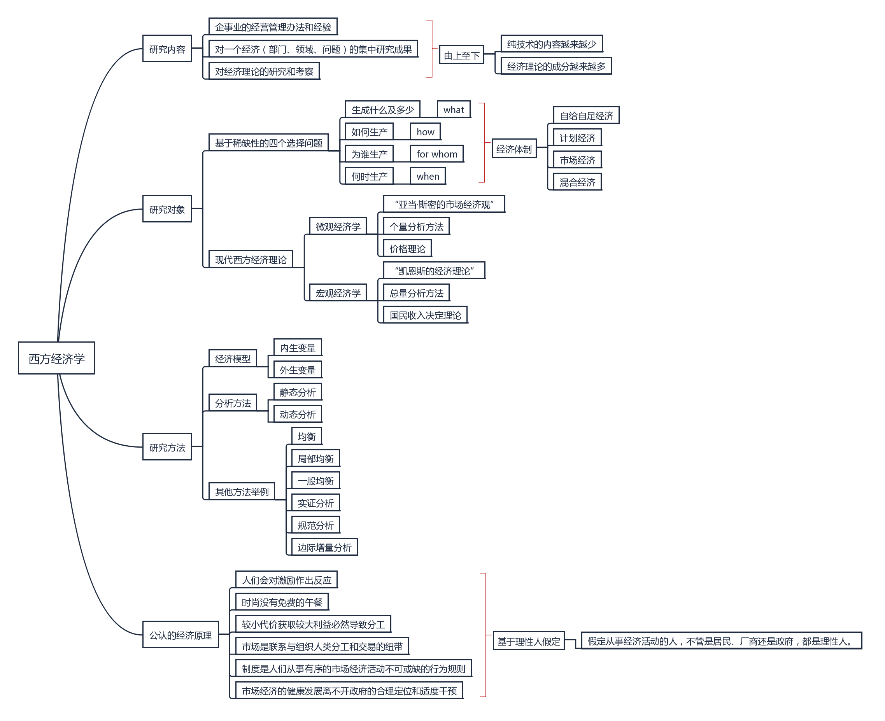

摘要
本文主要记录作者在学习西方经济学（微观部分）时获得的收获。
关键词：经济学；笔记；
持续更新中
引论
关键概念
一图胜千言：

从图中我们可以看到，经济学根本在于对经济资源的配置和利用，从此引申出来基于稀缺性的四个重要问题。
同时在此需要强调的是西方经济学最主要的两大分支：微观经济学和宏观经济学。
首先是微观经济学：
微观经济学以单个经济单位（家庭、企业和单个产品市场）为考察对象，运用个量分析方法，研究单个经济单位的经济行为以及相应的经济变量如何决定，分析的是资源配置问题。由于资源配置再市场经济中是通过价格机制决定的，故微观经济理论又被称为价格理论。
——《西方经济学》 高鸿业
然后是宏观经济学：
宏观经济学以整个国民经济活动为考察对象，运用总量分析方法，研究社会总体经济问题以及相应的经济变量如何决定，研究这些经济变量的相互关系。这些变量中的关键是国民收入，因此宏观经济理论又被称为国民收入理论。
——《西方经济学》 高鸿业
高教授的论述已经很清晰了，所以我就直接引用了。本文主要是记录作者在学习西方经济学（微观部分）时获得的收获，所以之后涉及宏观部分就不再赘述。
批判思考
书中对于经济学的批判思考主要表现在以下几点：
对西方经济学科学性的质疑
西方经济学的理论体系不完全符合科学要求，并不能完美地描述现实经济生活中的实际情况。
西方经济学缺乏科学应当有的理论一致性，学科内部理论往往存在矛盾。
西方实际学中的假设往往过于理想化甚至不符合实际，基于此的理论也如空中楼阁，存在不合理之处。
经济学需要数学作为研究工具，但决定经济学是否科学的是它的思想内容，而不是其数学工具。
西方经济学往往带有资本主义的意识形态问题，但往往在教科书中，不少都以科学著作自居，很少甚至不谈意识形态的问题。
关于上述三点让我想起了曾经看到的某个知乎回答，大致解释了硕士毕业比本科毕业工作薪资高的原因，除了专业知识上的差距外，还有思维方式上的差距：硕士的学习方式是碎片化+批判性学习，相对于本科对于专业知识系统性吸收，更具有自主独立性和主观能动性，因此学习效果以及应用成果往往更好。
对于一、三点，作者同样深表认同。这两个观点可以说是《这就是中国》节目中张维为教授提出的观点在经济学上的实际应用：西方现代科学体系仍有不少缺陷与不足，在我们学习和吸收知识时，一定需要批判性地剔除其中代表资本主义意识形态的价值观，否则往往思想就会被限制在资本主义或者当前科学是永恒的范围以内，从而失去自己思维的创造性和独立性。
相反，在作者的本科学习中，少有教师明确地指出这一观点，并且往往上课教材也是国外著作的英译本，这在作者看来是值得诟病的。
学习西方经济学的方法
书中提出了四点建议：
把握基本理论主线。
把握基本分析方法。
学会使用配套书籍。
学会理论联系实际。
在此作者提出一点自己的思考：
学会挖掘知识背后逻辑。
学用结合，解决身边实际问题。
归根揭底，不管对待任何学科的知识，实践是检验真理的唯一标准。:-)